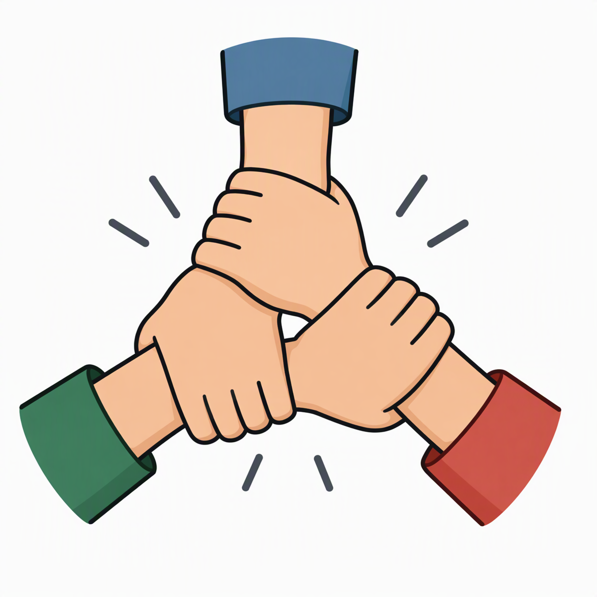

About
"You translate the essence, not just the words."
As a young adult, I often assisted with simultaneous translation during Dharma talks. Although I did not always know every Sanskrit or Tibetan term, I focused on understanding and communicating the intended meaning. Jesse Huang once encouraged me by observing that I translated the essence rather than merely the words.
Over the years, I have come to realize that this observation extends beyond language translation. It reflects how I approach communication, quality assurance, systems thinking, and collaboration. Whether I am interpreting requirements, analyzing workflows, testing applications, or helping teams bridge business and technical perspectives, I strive to preserve the original intent while communicating it clearly and accurately.
My journey has been shaped by curiosity, continuous learning, and a desire to understand how ideas move from concept to reality. Throughout different stages of my life, I found myself drawn to roles that required listening, connecting information, and helping others achieve a shared goal.
Whether assisting with simultaneous translation, working in logistics, supporting software development teams, or exploring web development, I have consistently enjoyed bridging gaps between people, processes, and technology. Each experience reinforced the importance of communication, understanding, and follow-through.
Today, I continue that journey through quality assurance, automation, systems thinking, and web development, always looking for opportunities to learn, improve, and contribute.
My professional background is rooted in Quality Assurance and User Acceptance Testing, where I have worked closely with business stakeholders, developers, project managers, and end users to help ensure that software solutions meet both functional requirements and business objectives.
Throughout my QA career, I have developed experience in:
- Requirements analysis
- Test planning and execution
- Exploratory testing
- User Acceptance Testing (UAT)
- Regression testing
- Defect documentation and tracking
- Risk identification
- Collaborative problem solving
One lesson that consistently emerged from quality assurance work is that successful testing is not just about finding defects, but about understanding intent and validating that the final solution delivers the expected outcome.
My interest in automation developed naturally from seeking efficient and reliable ways to improve testing processes.
Over time, I have worked with automation-related technologies and concepts including:
- C#
- JavaScript
- Data validation
- Process automation
- SQL verification
- Reusable testing approaches
Automation allows teams to perform repetitive tasks more consistently while freeing time for deeper analysis, exploratory testing, and continuous improvement. I enjoy understanding where automation provides the greatest value and how it can be integrated effectively into a broader quality strategy.
One of the themes that connects many of my experiences is systems thinking.
I enjoy looking beyond individual tasks to understand how information, decisions, and actions move through a larger process. Whether analyzing workflows, tracking requirements, examining business processes, or improving team communication, I often find myself asking:
- What is the goal?
- How is information moving?
- Where can misunderstandings occur?
- How can the process be improved?
This perspective has influenced my work in quality assurance, logistics, automation, documentation, and project collaboration. It also became one of the foundations for developing the Handshake of Three concept.
I am currently expanding my technical skills through hands-on web development projects and continuous learning.
Areas of study include:
- HTML5
- CSS3
- Responsive Design
- Bootstrap
- Git
- GitHub
- SCSS / Sass
- npm
- Parcel
- Firebase Hosting
Rather than viewing web development as a separate discipline, I see it as another opportunity to apply many of the same principles that have guided my work throughout the years: communication, problem solving, usability, testing, and continuous improvement.
Through projects such as The Corner Cafe and my Portfolio Project, I continue exploring how design, technology, and user experience come together to create practical and meaningful solutions.

Handshake of ThreeThe Handshake of Three originated from my experience observing how information, requirements, and expectations move between different people, teams, and stages of a process. The concept emphasizes that successful outcomes are rarely the result of a single handoff. Instead, they depend on continuous communication, shared understanding, and verification between parties. Whether in software development, customer communication, logistics, quality assurance, or project delivery, the goal is not simply to pass information forward, but to preserve the original intent throughout the journey.
This way of thinking has influenced how I approach testing, troubleshooting, process improvement, and collaboration.
For a more detailed explanation, examples, and discussion of the Handshake of Three concept, please visit my LinkedIn Projects section.
A Lesson That Stayed With Me
Over time, I have come to appreciate that many of the same principles apply across different areas of life, work, learning, and service. Whether translating a Dharma talk, testing software, automating a process, helping a team communicate effectively, or navigating day-to-day interactions, the fundamentals remain surprisingly similar: willingness to communicate, willingness to understand, and willingness to act on that understanding.